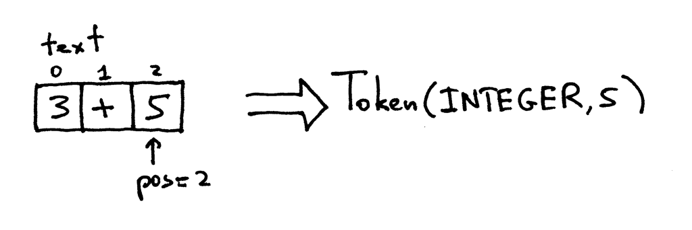
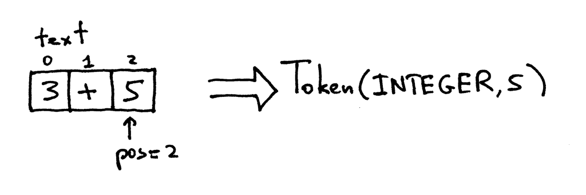

Rust from Ruby
TDC - POA
slides: https://rust-from-ruby.herokuapp.com
repo: github.com/cristianoliveira/rust-from-ruby
Falar de Rust em uma trilha de Ruby?
O que é?

"Rust is a systems programming language that runs blazingly fast, prevents segfaults, and guarantees thread safety."
Legal mas:
- Eu já programo em ruby
- Ruby paga as minhas contas
- Eu gosto de ruby
E mesmo assim devo aprender Rust?
Motivo 1
"A language that doesn’t affect the way you think about programming is not worth knowing."
- Alan Perlis
Motivo 2
Rust é extremamente rápido.

"Não uso Ruby por ser rápido e se precisar de performance posso descer para C"
Rust como uma alternativa.
String#blank? Use case.
// ... define stuff ...
static VALUE
rb_str_blank_as(VALUE str)
{
rb_encoding *enc;
char *s, *e;
enc = STR_ENC_GET(str);
s = RSTRING_PTR(str);
if (!s || RSTRING_LEN(str) == 0) return Qtrue;
e = RSTRING_END(str);
while (s < e) {
int n;
unsigned int cc = rb_enc_codepoint_len(s, e, &n, enc);
switch (cc) {
case 9:
case 0xa:
case 0xb:
case 0xc:
case 0xd:
case 0x20:
case 0x85:
// ... mais 50 linhas de código from hell...
Mais eficiente que a implementação original em 1 linha legível.
pub extern "C" fn tr_str_is_blank(stream: Buf) -> bool {
stream.as_slice().chars().all(|c| c.is_whitespace())
}
Motivo 3
Toda a segurança e conveniência do Ruby em código nativo - wycat
Rust uma linguagem inclusiva!

Rust e outras linguagens

Motivo 4
Você pode aprender muito como Ruby funciona através do Rust
Tentarei ensinar algo novo hoje! :)

Ruby to Rust
Semelhanças
words = ["Hello", "world", "from", "Ruby"]
words.each { |w| puts w }
fn main() {
let words = ["hello","word", "from", "Rust"];
words.iter().inspect(|w| println!("{} ", w));
}
Rust
- Tipagem estática
- Extremamente rápida
- Ótimo suporte a concorrência
- Sem garbage collector
Ruby
- Tipagem estática
- Extremamente rápida
- Ótimo suporte a concorrência
- Sem garbage collector
Duas abordagens diferentes
| Ruby | Rust |
| Interpretada | Compilada |
| Tipagem dinâmica | Estática com inferência |
| GIL | Concorrência |
| Garbage Collector | Ownership / Borrowing |
Duas abordagens diferentes.
Como eles executam isso?
# code.rb
2 * 7 + 3
fn main() {
2 * 7 + 3;
}
Ruby
1 - Tokenizer

 

2 - Parse
3 - Compila para byte code
# code.rb
2 * 7 + 3
puts RubyVM::InstructionSequence.compile(code).disassemble
# == disasm: <RubyVM::InstructionSequence:<compiled>@<compiled>>==========
# 0000 trace 1 ( 1)
# 0002 putobject 2
# 0004 putobject 7
# 0006 opt_mult <callinfo!mid:+, argc:1, ARGS_SIMPLE>
# 0008 putobject 3
# 0010 opt_plus <callinfo!mid:+, argc:1, ARGS_SIMPLE>
# 0012 leave
Finalmente - Interpreta

Rust

Compilada

Mesmo código em Rust
fn main() {
2 * 7 + 3;
}
$ rustc code.rs
// assembly (Intel)
push rbp // bla bla bla stack suff
mov rbp, rsp
mov eax, 17 // O QUE IMPORTA: move 17 para o registro de retorno
pop rbp
ret // exit
$ ./code
https://godbolt.org/g/wPfcb6
Tipagems estática e dinâmica
Consequências de cada decisão de design
integer = 10
string = "bla"
fn main() {
let integer = 10;
let string: &str = "bla";
}
Ruby - Classes
class Foo
def hi
"Hello"
end
end
f = Foo.new
f.hi
Rust - Strucs
struct Foo;
impl Foo {
pub fn hi(self) -> &str {
"Hello"
}
}
fn main() {
let f = Foo;
f.hi();
}
Compilando
Gera cerca de 80 linhas de assembly
Com otimização
Literalmente um programa vazio
Ruby - Modules - Mixins
module greeting
def hi
"bar"
end
end
class Foo
include Greeting
end
f = Foo.new
puts f.hi
Rust - Traits
struct Foo;
trait Greeting {
fn hi(&self) -> &str;
}
impl Greeting for Foo {
fn hi(&self) -> &str {
"foo"
}
}
fn main() {
let f = Foo;
println!("{}", f.hi());
}
Ruby - Ducktype
module Greeting ..
class Foo
include Greeting
end
class Bar
def hi
"bar"
end
end
def hello(f)
puts f.hi
end
foo = Foo.new
hello(foo)
bar = Bar.new
hello(bar)
Rust - Generics
struct Bar;
struct Foo;
trait Greeting {
fn hi(&self) -> &str;
}
impl Greeting for Foo {
fn hi(&self) -> &str {
"foo"
}
}
impl Greeting for Bar {
fn hi(&self) -> &str {
"bar"
}
}
fn hello<T: Greeting>(f: T) {
println!("{}", f.hi());
}
fn main() {
let bar = Bar;
hello(bar);
let foo = Foo;
hello(foo);
}
Monomorphisation
fn hello_bar(f: Bar) { .. }
fn hello_foo(f: Foo) { .. }
fn main() {
let bar = Bar;
hello_bar(bar);
let foo = Foo;
hello_foo(foo);
}
Concorrência
Threads
words = ["H", "e", "l", "l", "o"]
100.times.map do
words.each_with_index.map do |w, i|
puts "#{i} #{words[i]}"
end
end
100.times.map do
Thread.new do
words.each_with_index.map do |w, i|
puts "#{i} #{words[i]}"
end
end
end.each(&:join)

Threads
words = ["Hello", "world", "From", "Ruby"]
words.each_with_index.map do |w, i|
Thread.new do
puts "Thread #{i} print #{words[i]}"
end
end.each(&:join)
words = ["Hello", "world", "From", "Ruby"]
words.each_with_index.map do |w, i|
Thread.new do
words.push(" lol ")
puts "Thread #{i} print #{words[i]}"
end
end.each(&:join)
use std::thread;
fn main() {
let words = vec!["Hello", "World", "From", "Rust"];
for w in words.clone() {
let _ = thread::spawn(move ||{
words.push(" lol "); // error: capture of moved value: `words`
println!("{}", w);
});
}
}
O segredo do Rust é seu sistema
Ownership e Borrowing
Ownership
struct Book;
fn take(book: Book) { /* faz algo e libera memória (book) */ }
fn main() {
let a = Book;
take(a); // Transfere o owner do book
println!("{:?}", a); // Tenta usar o book novamente. Erro!
}
Borrowing
struct Book;
fn take(book: &Book) { /* faz algo e libera memória (book) */ }
fn main() {
let a = Book; // a (owner) do book entra no scopo
take(&a); // Empresta Ok
println!("{:?}", a); // Ok
} // todas saem do scopo

Muito Obrigado
Referências:
https://ruslanspivak.com/lsbasi-part1
https://github.com/steveklabnik/rust_for_rubyists
https://blog.rust-lang.org